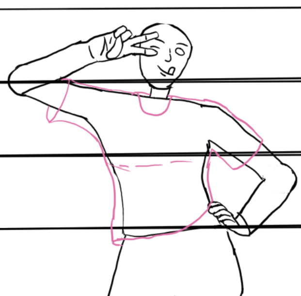
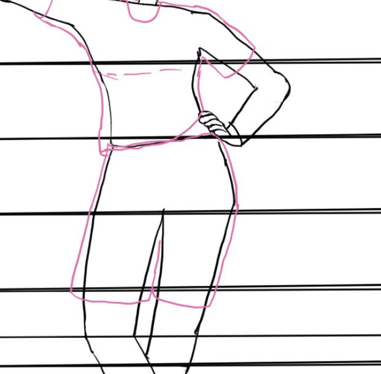

Art Tutorial 4
Date: 2024-9-26 12:00:00
Welcome back
Hey there! I have some bigger projects in the pipeline, but I figured it'd be best to finish this tutorial first. We only have two lessons left anyway. Today, we'll be working on some clothes!
There's a few things you have to understand first before we go into clothes, the most important thing is that cloth is some of the hardest thing to look amazing, so don't fret over if it's not as detailed as you'd like it to be, it just happens like that.
You also want to determine what clothes you want for the drawing. While I can't go over every clothing style, I'll try to give a good overview. First, we'll start with shirts.
The first thing to note is that you want to note is that the upper half of the body will typically be more "stuck" to the person compared to the bottom part. Now, this can depend on how the character pose is done, the state of the character, or finally, if you just want it to be a tight shirt for the booba. The best way to line things up is with the breast area being more of the middle portion (men have breasts, too).
How far down you want it to be is also up to you. I tend to like the shirt over the pants, but that's also up to you. Dresses will be done similarly. Another nice thing is that you can mask bad body proportions if you mess things up. For now, the shirt will look flat in this instance, but once some detail is done, it'll look better.
Shirt Example
It'll look something like this. Using different colors/layers while drafting the image is always good. You'll want to use lighter colors if you're on paper/pencil.
Pants Example
This looks rather simple, but it's just a sketch! Now, we'll add some more detail.
Cleaning Up the Shirt and Pants

But now we'll add some detail to our clothing. A good way to add depth to a shirt is weight, showing one side having more of a "baggier area" than the other. We can also have parts of it fold onto itself, making it pop more.
To add some detail to pants, you can add a design, maybe a belt, pockets, and some cuts. There are lots of options, depending on how you feel.
Final Shirt and Pants Example

Went from a fairly flat image to now something better.
That's all the work done today! I'm pretty happy with it! The next lesson will be cleaning up the rest of the drawing!